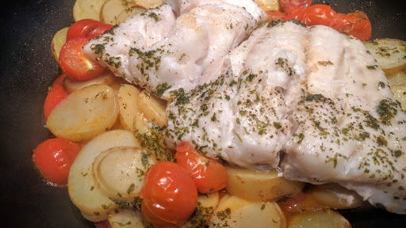

Chorizo, new potatoes and haddock
Ingredients
- 1 tbsp extra virgin olive oil
- 50 g chorizo, peeled and thinly sliced
- 450 g salad or new potatoes, sliced
- 4 tbsp dry sherry
- 2 skinless thick fillets white fish
- handful of cherry tomatoes
- 20 g bunch flat-leaf parsley
- crusty bread, to serve
Instructions
- Heat a large lidded frying pan, then add the oil. Tip in the chorizo, fry for 2 minutes until it starts to release its oil, then tip in the potatoes and some seasoning. Splash over 2 tbsp of the sherry, cover the pan tightly, then leave to cook for 10-15 minutes until the potatoes are just tender. Move them around the pan a bit halfway through.
- Season the fish well. Give the potatoes another stir, add the cherry tomatoes and most of the chopped parsley to the pan, then lay the fish on top. Splash over 1 tbsp more of the sherry, put the lid on again, then leave to cook for 5 minutes, or until the fish has turned white and is flaky. Scatter the whole dish with the rest of the parsley and drizzle with more of the olive oil. Serve straight away with crusty bread.
Source
BBC Good Food: One-pot DishesShort URL | Long URL